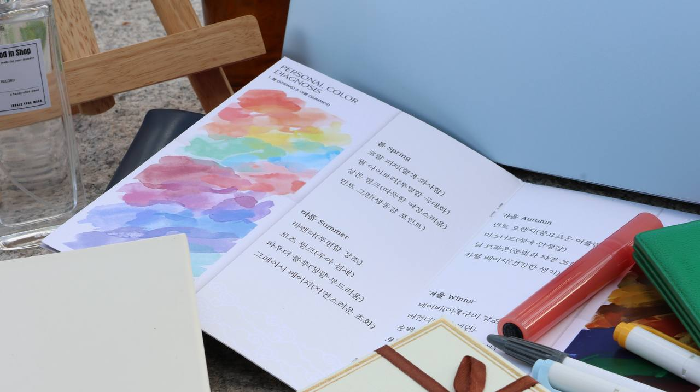
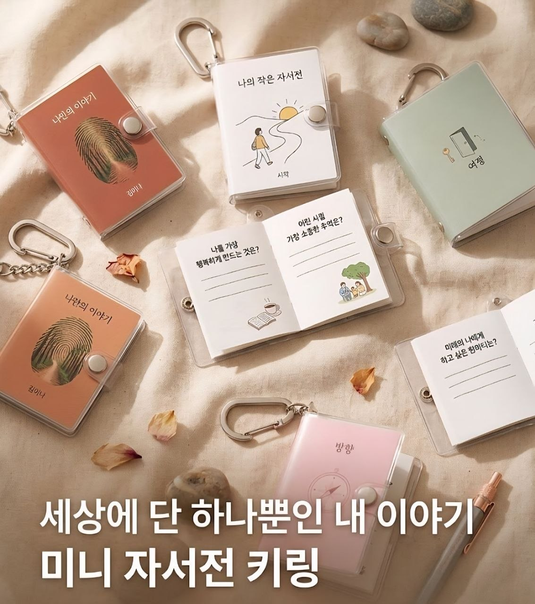
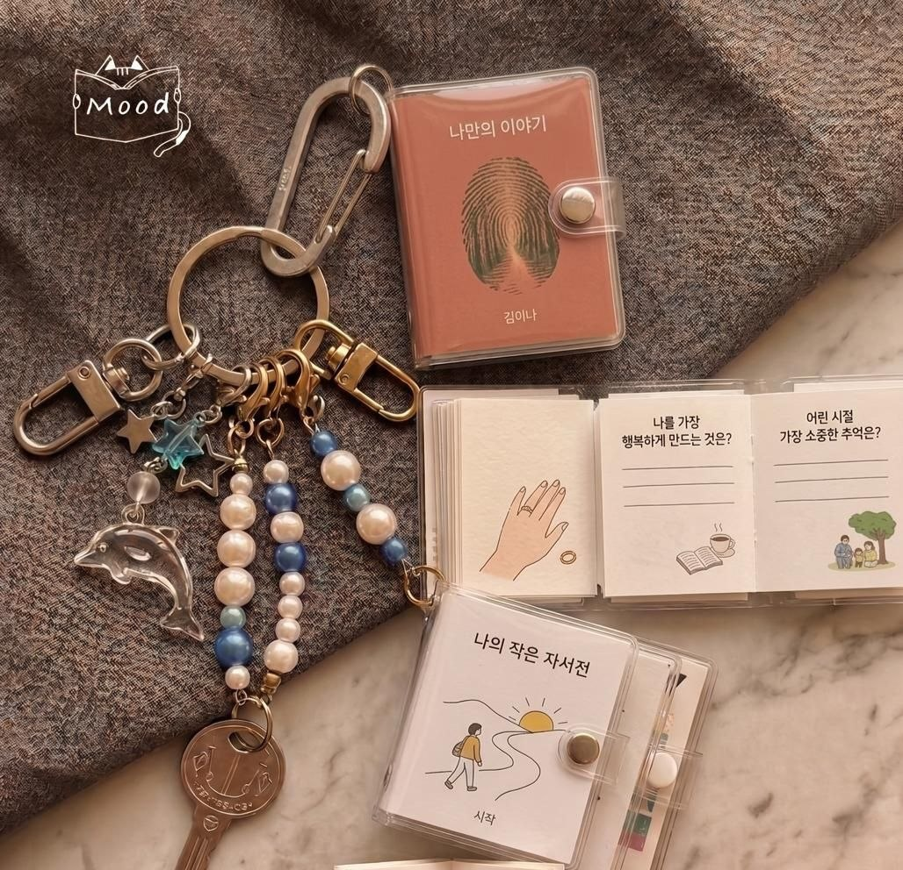
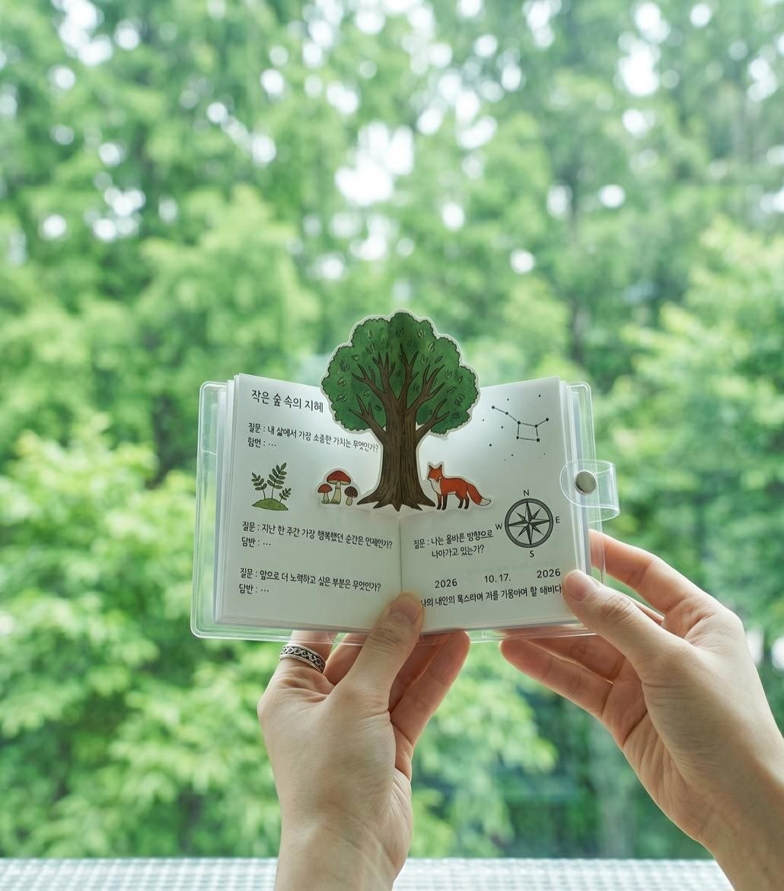
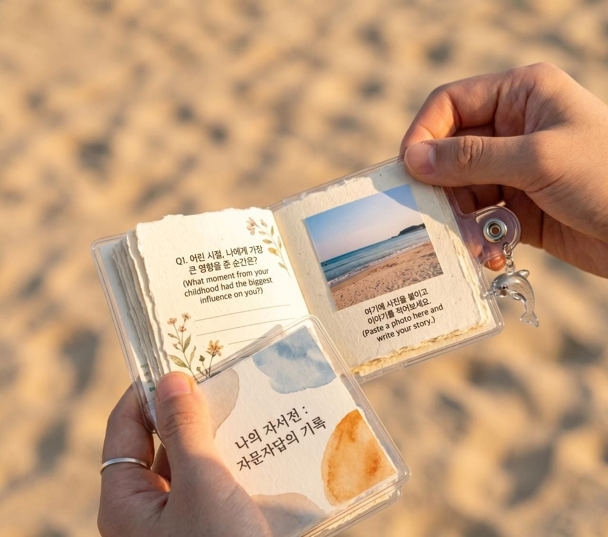
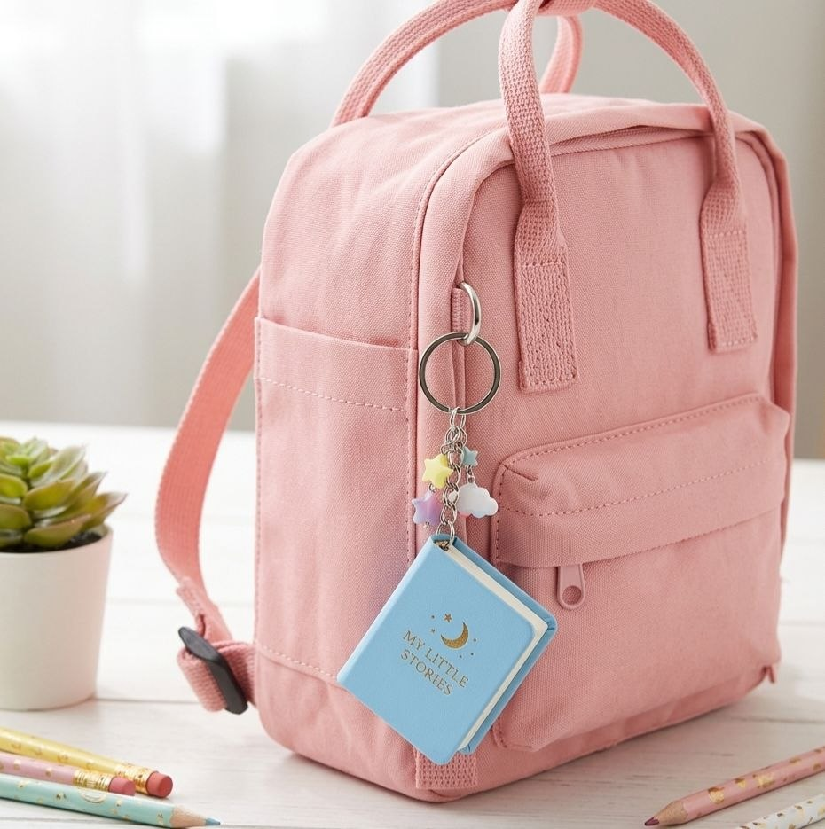
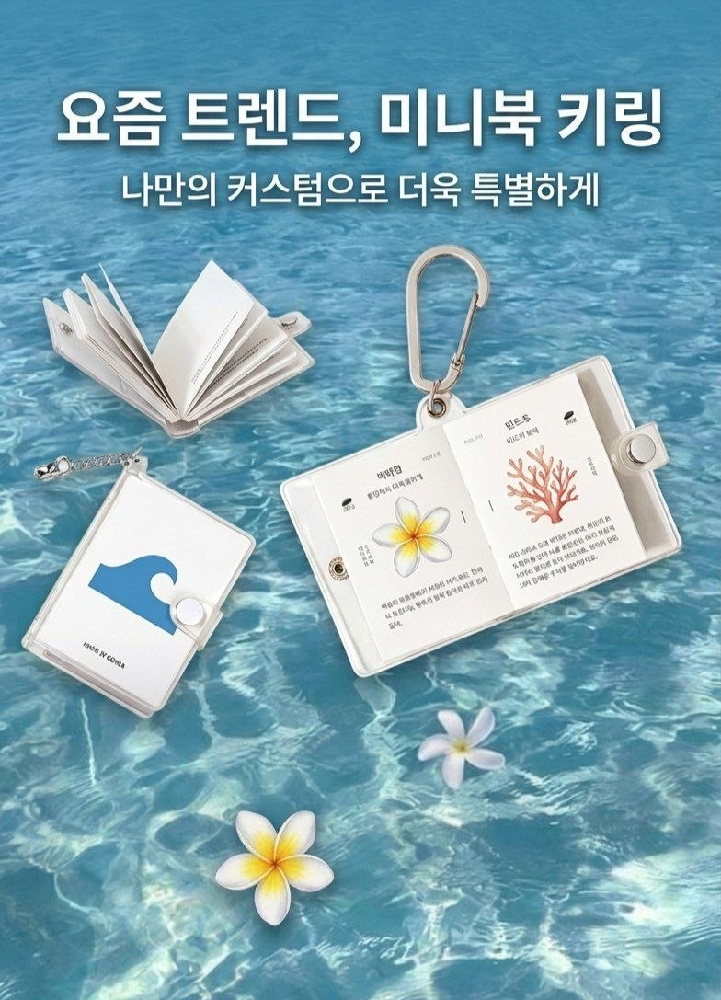
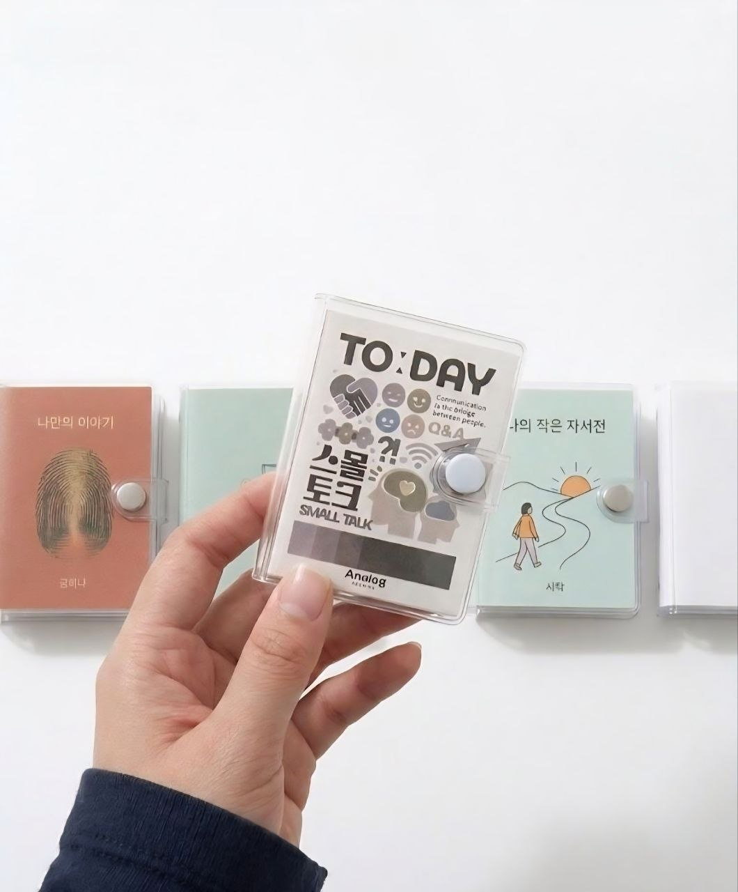

무드는, 감각에서 시작됩니다.
체험단 모집 중 · Recruitment Open
오늘의 무드를, 한 문장으로

'무드 인 센텐스'는 일상의 틈새에서 발견하는 당신만의 색채와 감정, 그 찰나의 조각들을 단 한 줄의 문장으로 엮어냅니다. 75×105mm, 손바닥 위에 가볍게 올라오는 이 작은 책은 당신의 시선이 머문 곳을 기록하기 위해 정성껏 비워져 있습니다.
8페이지로 구성된 미니 북은 당신의 감정을 입체적으로 아카이브합니다. 오늘을 정의하는 '무드 문장'을 시작으로, 나에게 건네는 따뜻한 말 한마디, 지금 이 순간의 장면, 그리고 오늘을 채운 색과 음악까지.
100% 재생지와 필기감이 좋은 미색 내지는 당신의 기록이 종이 위에 부드럽게 스며들게 하며, 마지막 페이지 'From.'을 채우는 순간 이 책은 세상에 단 하나뿐인 당신의 자서전이 됩니다.
언제 어디서나 가볍게 들고 다닐 수 있는 이 미니 북은 당신의 일상에 잔잔한 쉼표를 찍어줍니다. 미니 북의 감성을 그대로 응축한 '미니 북 키링' 런칭을 앞두고 있습니다. 정식 런칭 전 사전 체험단 활동을 통해, 당신의 무드를 휴대할 수 있는 특별한 경험을 누구보다 먼저 시작해 보세요.
Lookbook · 키링 스타일




세상에 단 하나뿐인 내 이야기. 나만의 이야기, 나의 작은 자서전, 방향, 여정 — 테마를 골라 나를 기록하세요.

요즘 트렌드, 미니북 키링. 나만의 커스텀으로 더욱 특별하게 — 다양한 테마와 일러스트로 나만의 스타일을.

오늘, 누군가와 나누고 싶은 이야기. Q&A 형식의 스몰토크 미니북으로 일상의 대화를 더 깊게.